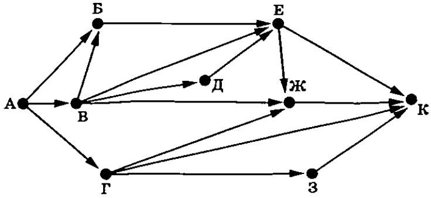

Информатика ОГЭ 2025 года содержит 16 заданий, то есть работа состоит из двух частей. Первая часть содержит 10 заданий с краткими ответами, во второй части 6 заданий, которые необходимо выполнить на компьютере.
С 1 по 12 ответы необходимо перенести на БЛАНК ОТВЕТОВ № 1.
C 13 по 16 необходимо выполнить на компьютере, результатами выполнения заданий являются отдельные файлы. Имя файла которого сохранили необходимо перенести на БЛАНК ОТВЕТОВ № 2.
| Номер задания | Максимальный балл |
| № 1-12 | 1 |
| № 13 | 2 |
| № 14 | 3 |
| № 15 | 2 |
| № 16 | 2 |
| Баллы | Оценка |
| 0-4 | 2 |
| 5-10 | 3 |
| 11-15 | 4 |
| 16-21 | 5 |
1. В кодировке KOI8-R каждый символ кодируется 1 байтом. При подготовке доклада о русских художниках Лена написала текст (в нём нет лишних пробелов). Затем Лена добавила в текст упоминание ещё об одном художнике, добавив также необходимые пробелы и знаки препинания, после чего текст стал таким:
«В лучших музеях хранятся полотна таких замечательных русских художников, как Ге Н.Н., Гау Э.П., Серов В.А., Перов В.Г., Брюллов К.П., Васнецов В.М., Верещагин В.В., Айвазовский И.К., Боровиковский В.Л.».
При этом размер нового предложения в данной кодировке оказался на 128 бит больше, чем размер исходного предложения. Напишите в ответе добавленную Леной фамилию художника (инициалы писать не нужно).
2. От разведчика было получено сообщение:
1110110100001110001101
В этом сообщении зашифрован пароль - последовательность русских букв. В пароле использовались только буквы А, В, Е, О, Р, Т, Ф; каждая буква кодировалась двоичным словом по следующей таблице.
| А | В | Е | О | Р | Т | Ф |
| 01 | 000 | 001 | 100 | 101 | 110 | 111 |
Расшифруйте сообщение. Запишите в ответе пароль.
3. Напишите наименьшее натуральное число x, для которого истинно высказывание:
НЕ((x < 100) ИЛИ (x ≤ 70))
4. Между населёнными пунктами A, B, C, D, E построены дороги, протяжённость которых (в километрах) приведена в таблице.
| A | B | C | D | E | |
| A | 70 | 40 | 60 | 80 | |
| B | 70 | 30 | |||
| C | 40 | 50 | 20 | ||
| D | 60 | 50 | 10 | ||
| E | 80 | 30 | 20 | 10 |
Определите длину кратчайшего пути между пунктами A и E, проходящего через пункт C. Передвигаться можно только по дорогам, указанным в таблице. Каждый пункт можно посетить только один раз.
5. У исполнителя Омега две команды, которым присвоены номера:
1. прибавь b
2. возведи в квадрат
(b - неизвестное натуральное число).
Выполняя первую из них, Омега увеличивает число на экране на b, а выполняя вторую, заменяет число на экране на это же число, возведённое в квадрат.
Программа для исполнителя Омега - это последовательность номеров команд. Известно, что программа 11112 переводит число 2 в число 100.
Определите значение b.
6. Ниже приведена программа, записанная на пяти языках программирования.
| Бейсик | Алгоритмический язык | Паскаль |
|
DIM t, s AS INTEGER INPUT s INPUT t IF s > 2 AND t > -1 THEN PRINT "YES" ELSE PRINT "NO" END IF |
var s, t: integer; begin readln(s); readln(t); if s > 2 и t > -1 then writeln ('YES') else writeln ('NO') end. |
алг нач цел s, t ввод s ввод t если (s > 2) and (t > -1) то вывод "YES" иначе вывод "NO" все кон |
| С++ | Python | |
|
#include using namespace std; int main() { int s, t; cin >> s; cin >> t; if (s > 2 && t > -1) cout << "YES"; else cout << "NO"; return 0;} |
s = int(input()) t = int(input()) if s > 2 and t > -1: print("YES") else: print("NO") |
|
Было проведено 10 запусков программы, при которых в качестве значений переменных s и t вводились следующие пары чисел вида (s, t):
(1, 1); (2, 2); (3, 3); (4, 7); (7, 4); (1, -4); (4, -5); (-1, 2); (-1, 8); (-7, 4).
Сколько было запусков, при которых программа напечатала «YES»?
7. Доступ к файлу с именем folksongs.zip, находящемуся на сервере music.com, осуществляется по протоколу https. Фрагменты адреса файла закодированы цифрами от 1 до 7. Запишите последовательность этих цифр, кодирующую адрес указанного файла в сети Интернет.
1) music
2) .com
3) folksongs
4) https
5) /
6) .zip
7) ://
8. В языке запросов поискового сервера для обозначения логической операции «ИЛИ» используется символ «|», а для логической операции «И» – символ «&». В таблице приведены запросы и количество найденных по ним страниц некоторого сегмента сети Интернет.
| Запрос | Найдено страниц (в тысячах) |
| Тарас | Шевченко | 1715 |
| Тарас | 950 |
| Шевченко | 780 |
Какое количество страниц (в тысячах) будет найдено по запросу Тарас & Шевченко?
Считается, что все запросы выполнялись практически одновременно, так что набор страниц, содержащих все искомые слова, не изменялся за время выполнения запросов.
9. На рисунке – схема дорог, связывающих города А, Б, В, Г, Д, Е, Ж, З и К. По каждой дороге можно двигаться только в одном направлении, указанном стрелкой. Сколько существует различных путей из города А в город К, проходящих через город Ж?

10. Число 3322n, записано в системе счисления с основанием n (n > 1). Определите наименьшее возможное значение n. Для этого значения n в ответе запишите представление данного числа в десятичной системе счисления. Основание системы счисления указывать не нужно.
11.
В одном из произведений И. С. Тургенева, текст которого приведён в подкаталоге
каталога Проза, описывая героя, автор называет его забиякой.
С помощью поисковых средств операционной системы и текстового редактора или браузера
выясните фамилию этого героя.
 Скачать файл
Скачать файл12. Сколько всего файлов объёмом более 150 Кб каждый содержится в подкаталогах Блок, Есенин, Некрасов каталога Классика/Стихи? В ответе укажите только число.